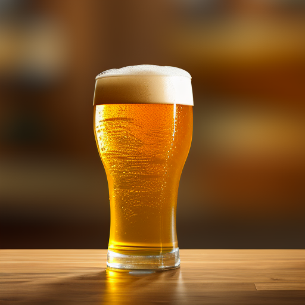
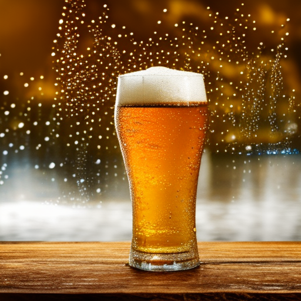
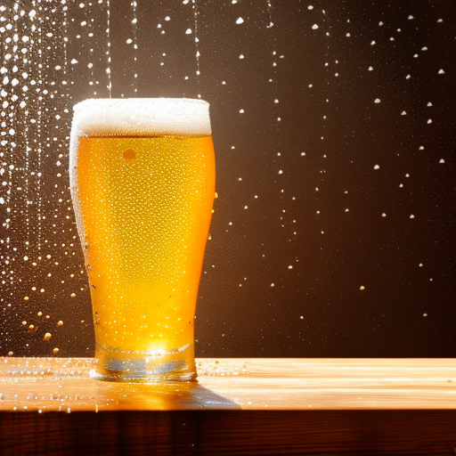

Cerveza Rubia
Cerveza dorada y refrescante con notas maltosas y amargas. Versátil y de cuerpo ligero a medio. Ideal para maridar con comidas y celebraciones. Existen múltiples subestilos y variantes regionales


